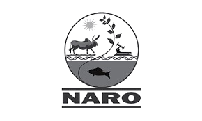
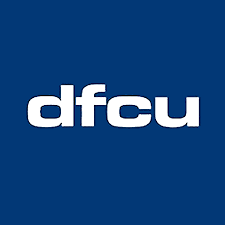
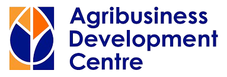
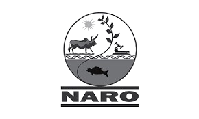
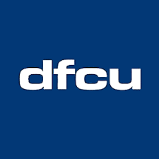
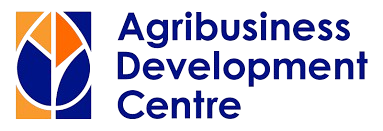
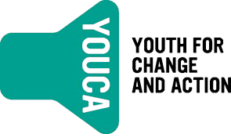
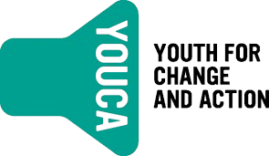

Engineer &
Entrepreneur
I’m Mercy Nekesa. Computer scientist, entrepreneur, and founder of Zorentia.
The most impactful technology is built by those who deeply understand the problem. Yet, domain experts remain sidelined because technical execution is still a black box. Zorentia makes building tech legible by codifying the "how" of technical execution. The methodology - initially validated via the Westpac New Wave X first prize and a $15k infrastructure pilot - is now live.
Before Zorentia, I bootstrapped Raining Vegetables, an ag-tech company in Uganda to 7,000 farmers, partnering with private, public, and international organisations to improve agricultural outcomes.
Zorentia
Building technology is currently a game of high-stakes guessing. Zorentia
replaces that with Ship Plans - precision engineering logic for the execution phase.
We transform raw technical vision into a Deterministic Sequence: a complete, step-by-step
roadmap that dictates exactly what to build, in what order, and how to verify completion at
every node. By codifying the shipping process, we ensure you don’t just launch a product - you
master the architecture of launching itself.
We are starting with software.
You bring the intent; we provide the blueprint.
Selected Experience
Zorentia
Develoed the One-Gram of tech methodology and Ship Plan infrastructure. Zorentia translates technical intent into executable sequences, providing the step-by-step logic required to build and launch software products.
Raining Vegetables (Group)
Engineered and scaled a national ag-tech platform serving 7,000 farmers. Managed the full technical stack, including AWS infrastructure, payment integration, and data architecture, while leading strategic partnerships with Rikolto (Belgium) and the National Agricultural Research Organisation (NARO).
Secured and managed institutional collaboration with the Agribusiness Development Centre (ADC), an entity established by the Rabo Foundation (Netherlands) and dfcu Bank. Operated at the intersection of international development finance and large-scale technical deployment.
Subsidiary: Sundetails Technologies
Directed the digital transition of small-to-medium enterprises. Developed custom software solutions to replace manual legacy operations with digital workflows and data-driven management systems.
Uganda Christian University (UCU)
Led curriculum development and research mentorship within the Computer Science department. Focused on the transition from academic software research to industry-standard project execution and product management.
 





 


Awards & Media
UNSW New Wave Winner
Recognized for early-stage venture architecture and technical leadership within the UNSW ecosystem.
Best Agri-Business
International recognition for sustainable innovation and data-driven agricultural impact.
Best Female Entrepreneur
Awarded for innovation and resilience in building software for the agricultural sector.

Internships (Archive)
Jebbit (Boston) — SWE Intern: Enterprise marketing Infrastructure
University at Buffalo (New York) — Research Fellow: Engineering & Applied Sciences
Fleet by MasT (Baltimore) — Full Stack Intern: Logistics & Fleet Management
ETS (Washington D.C.) — SWE Intern: Secure Financial Systems
Research & Projects (Archive)
Medical NLP Translator
Designed an NLP solution for 2,000+ unsupported African languages. Built an LSTM-based machine translation algorithm for clinical communication.
Journey to Mental Wealth
Full-stack platform for resource mapping and community support mechanisms, focusing on social infrastructure for at-risk demographics.
Panels & Fieldwork
Kampala, Uganda: Panel speaker at the Digital Financial Inclusion Summit, charting a path for inclusive mobile finance with regional changemakers.

Sydney, Australia: Celebrated as the UNSW New Wave 2025 winner for Zorentia.

Sydney, Australia: Panelist at the AI Startup Showcase during the AI in Business and Society launch, speaking as a technical female founder.
Kampala, Uganda: On the left flank of the digital summit panel with ABSA and other bank leaders, outlining how finance can meet modern infrastructure.
Kampala, Uganda: Second from the left with a circle of women founders at the Women in Fintech Summit.

Sydney, Australia: Panel speaker during the Singapore Institute of Technology exchange visit hosted by the UNSW Business School.
Sydney, Australia: Center stage with the UNSW New Wave 2025 women founders cohort, celebrating collective momentum.
Education
Master of Science in Computer Science, University of New South Wales (UNSW), Australia
Bachelor of Science in Computer Science, The State University of New York at Buffalo, USA
Global Impact
YOUCA Ambassador
Thread Mentor
Let's Build.
Zorentia for students is live. If you're student building something, I'd like to hear about it.